Tuklasin ang kasaysayan, uri, anyo, at yaman ng Panitikang Panlipunan.
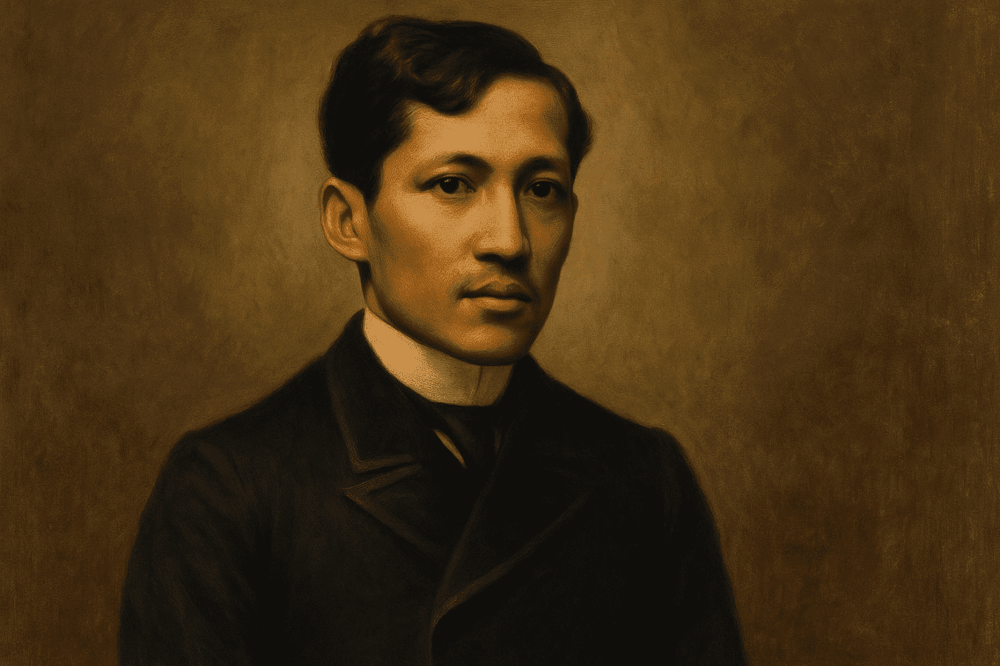
Paatalata at nasa karaniwang takbo ng pangungusap.
Pataludtod, may sukat at tugma o malayang taludturan.
| URI | KAHULUGAN | HALIMBAWA | IMAHE |
|---|---|---|---|
| Alamat | Uri ng panitikan na nagsasalaysay ng pinagmulan ng mga bagay-bagay. | Ang Alamat ng Pinya |
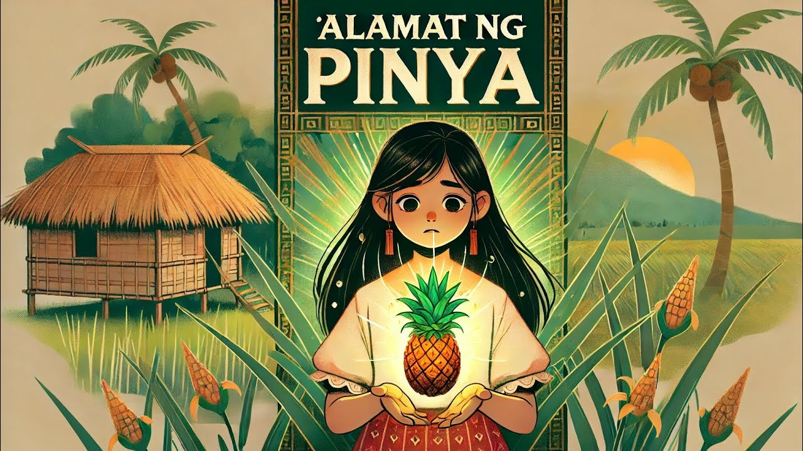 |
| Anekdota | Maikling kuwento tungkol sa totoong pangyayari. | Tsinelas ni Rizal |
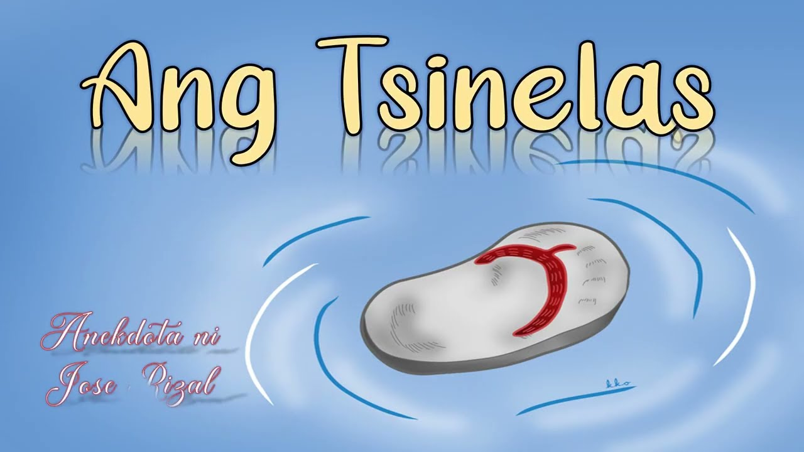 |
| Pabula | Kuwentong hayop na may aral. | Si Matsing at si Pagong |
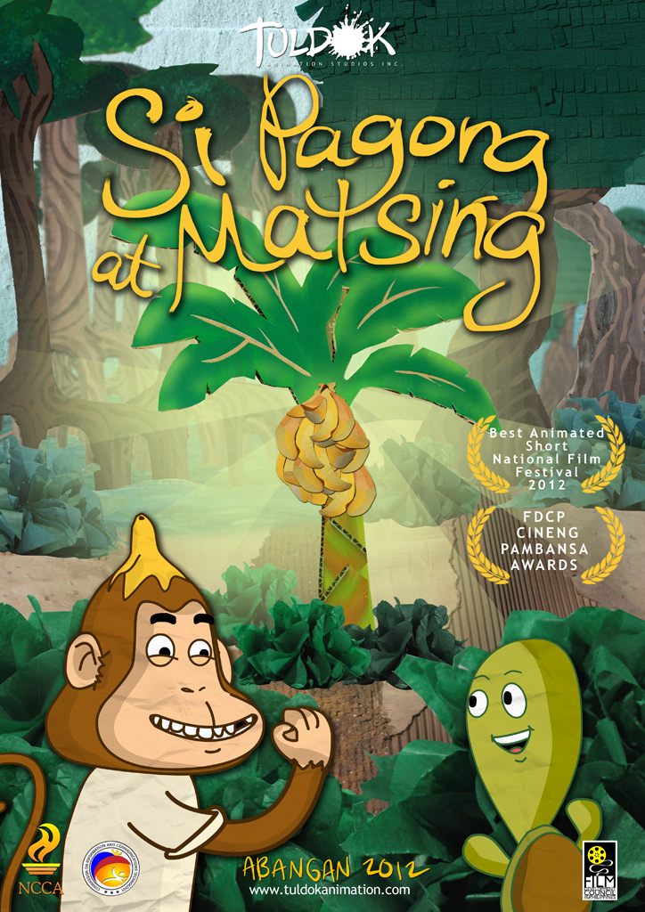 |
| Parabula | Kuwentong mula sa Bibliya na may aral. | Ang Alibughang Anak |
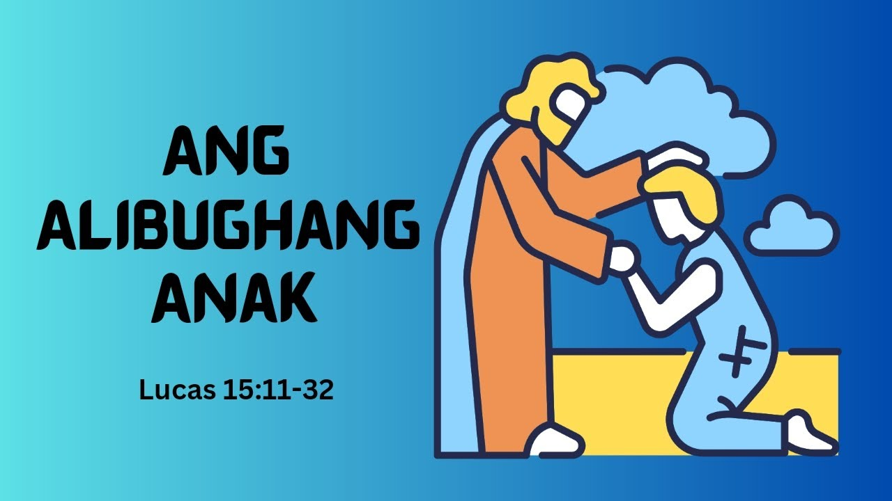 |
| Sanaysay | Pagpapahayag ng opinyon o pananaw ng may-akda. | Ang Pag-ibig |
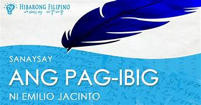 |
| Talambuhay | Kasaysayan ng buhay ng isang tao. | Talambuhay ni Mabini |
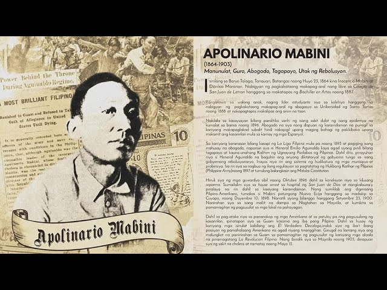 |
| Talumpati | Pormal na pagpapahayag sa harap ng tao. | SONA |
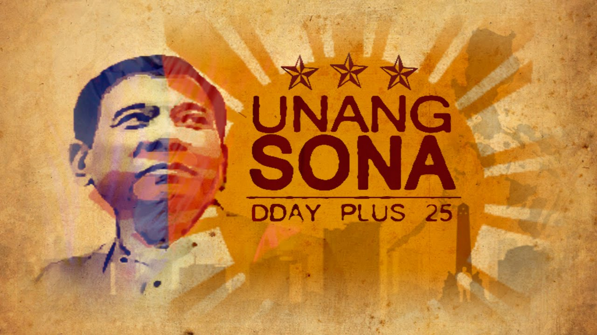 |
| Balita | Ulat ukol sa napapanahong pangyayari. | Balita tungkol sa bagyo |
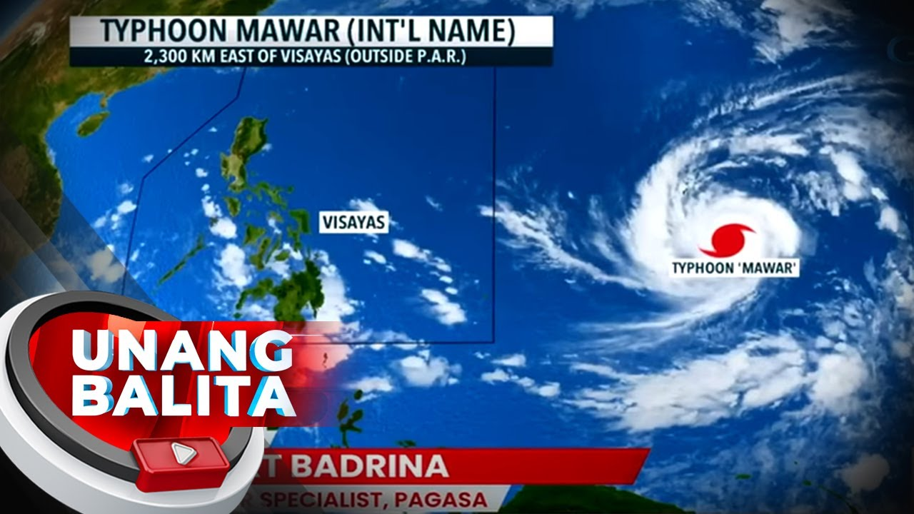 |
| Nobela | Mahabang akdang pampanitikan. | Noli Me Tangere |
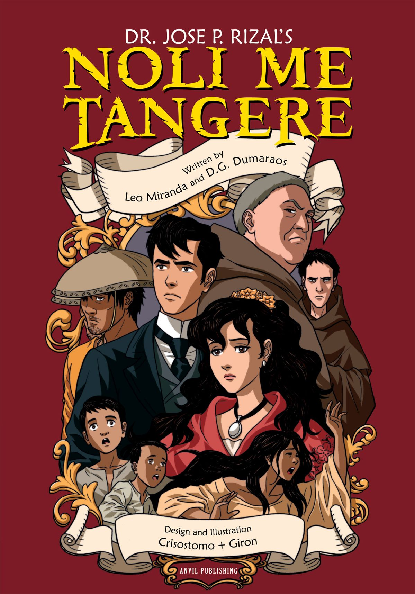 |
| Maikling Kwento | Maikling salaysay na may mahalagang pangyayari. | Kwento ni Mabuti |
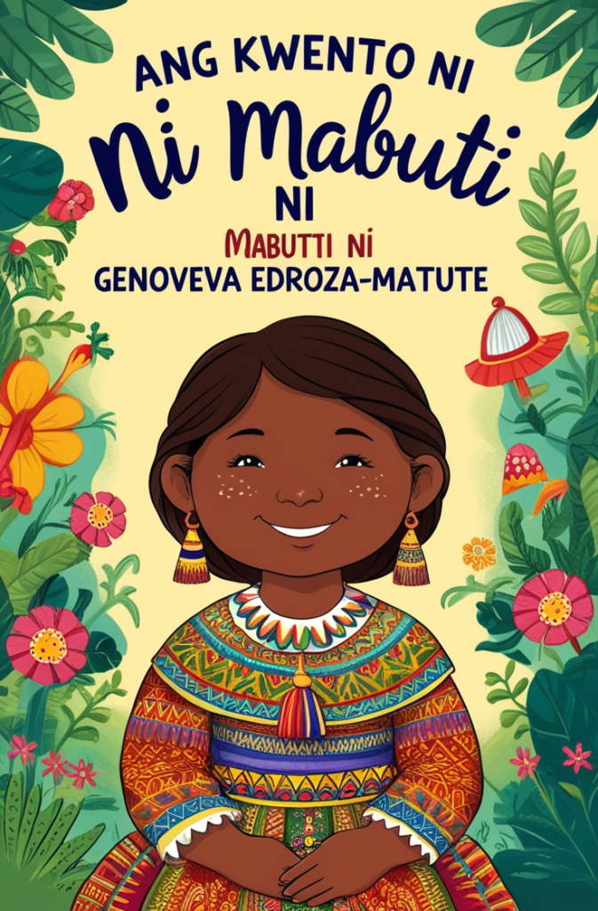 |
Mitolohiya | ay isang koleksyon ng mga kwentong-bayan, alamat, at paniniwala tungkol sa mga diyos, diyosa, at mga kakaibang nilalang. | Si Malakas at si Maganda |
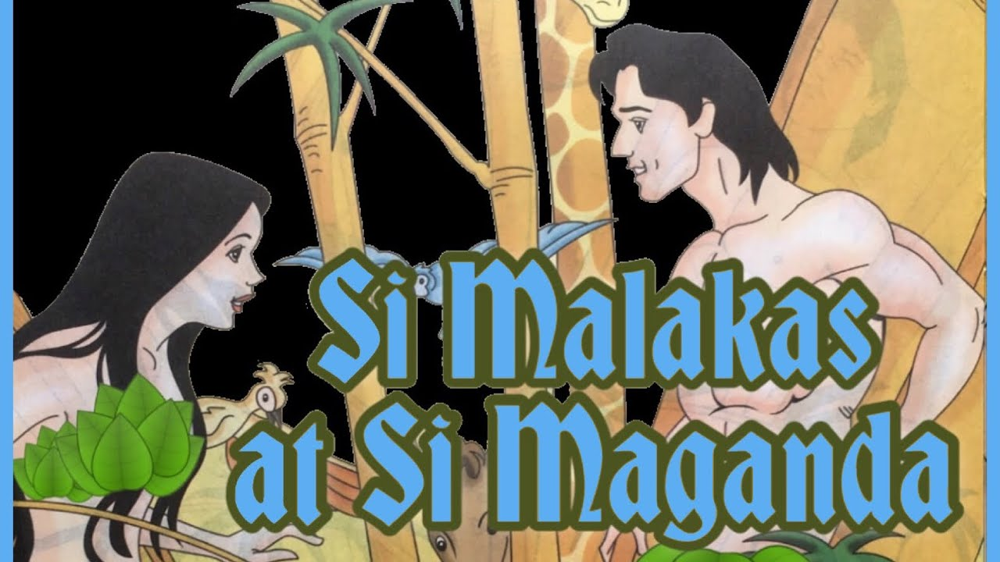 |
mga karakter sa kuwento.
lugar at panahon kung saan nangyari ang kuwento.
pagkakasunod-sunod ng mga pangyayari.
problemang kinaharap ng mga tauhan.
pinakamataas o pinakakapanabik na bahagi ng kuwento.
katapusan ng kuwento.
Nagbibigay ng kaalaman o impormasyon.
Nanghihikayat upang maniwala ang tao.
Nagbibigay inspirasyon at lakas ng loob.
Layuning magbigay aliw.
Nagtuturo kung paano gawin ang isang bagay.
Talumpating ibinibigay nang walang sapat na paghahanda o "impromptu".
Talumpating pinag-aaralan, sinusulat, at pinaghahandaan bago bigkasin.
Talumpating gumagamit ng masining at makahikayat na pananalita upang maantig o makumbinsi ang mga tagapakinig.
Bahaging nagpapakilala sa paksa at kumukuha ng atensyon ng tagapakinig.
Pinakamahalagang bahagi kung saan inilalahad ang mga pangunahing ideya at paliwanag.
Bahaging nagbibigay ng buod at panghuling mensahe sa tagapakinig.
Mga taong gumaganap sa kwento.
Lugar at panahon kung saan naganap ang kwento.
Pagkakasunod-sunod ng mga pangyayari sa kwento.
Suliranin o labanang kinakaharap ng tauhan.
Pangunahing aral o mensahe ng kwento.
Paraan kung paano ikinukwento ang istorya.
Bagay o pangyayaring may mas malalim na kahulugan.
Ang tula ay isang uri ng panitikan na nagpapahayag ng damdamin, karanasan, at imahinasyon gamit ang piling salita, tugma, at sukat.
“Ang buhay ay parang hangin,
Minsan ay tahimik, minsan ay malalim.”
Grupo ng mga taludtod sa isang tula.
“Ang araw ay sumisikat,
Liwanag ay sumasapit,”
Bagong pag-asa'y hatid,”
Sa bawat pusong sabik.”
Isang linya o hanay ng mga salita sa tula.
“Ang araw ay sumisikat"
Pagkakatulad ng tunog sa hulihan ng salita.
“Ang batang mabait ay minamahal,
Kaya siya'y laging dangal.”
Bilang ng pantig sa bawat taludtod.
“Ang batang mabait ay minamahal"
Malalim na kahulugan ng salita.
“Ilaw ng tahanan"
Ang imahen ay mga salitang lumilikha ng malinaw na larawan sa isip ng mambabasa.
“Tahimik na sumasayaw ang mga dahon sa malamig na hangin.”
Ang aliw-iw ay ang himig o indayog ng pagbigkas ng tula.
“Mabagal na pagbigkas para sa malungkot na tula."
Ang tono ay ang damdamin o emosyon na ipinapakita sa tula.
“masaya, malungkot, galit, atbp."
Ang persona ay ang nagsasalita o tinig sa loob ng tula.
“Isang anak na nagpapasalamat sa kanyang ina."
Ang tradisyunal na tula ay may sinusunod na tugma at sukat sa bawat taludtod.
Ang batang masipag sa gawain,
Nagiging huwaran sa atin.
Ang malayang taludturan ay tulang walang sinusunod na tugma at sukat.
Ako'y naglalakad
Sa tahimik na gabi
Habang iniisip
Ang takbo ng buhay.
Ang blangkong berso ay tulang may sukat ngunit walang tugma.
Ang araw ay muling sisikat
Sa bagong umagang darating.
Ang tulang pasalaysay ay uri ng tula na nagkukuwento ng mga pangyayari o pakikipagsapalaran.
Ang tulang liriko ay nagpapahayag ng damdamin, emosyon, at saloobin ng makata.
“Mahal kita nang buong puso,
Ikaw ang ligaya ko.”
Ang tulang dramatiko ay isinulat upang itanghal o bigkasin sa entablado.
Ang tulang patnigan ay palitan ng katuwiran o pagtatalo gamit ang tula.